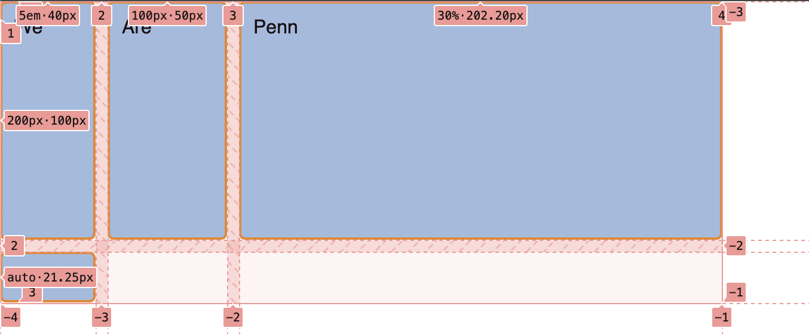

Recap from last class
- Aligning flex items
- Chrome Dev Tool for flexbox
Aligning flex items
Across cross or main axis
Aligning flex items on cross
axis
align-items
applies to all flex items as a group
stretch: fills the parent
center: centers the items
Other options
flex-start, flex-end, start,
end, …
Aligning one item
align-self
align-self applies to a single item
- values similar to
align-items
stretch, center, start,
end, …
Wrapping
Distribution of space
between lines
align-content determines space between
flex lines- Only applicable when
wrapping happens
- Options
space-between, space-around,
space-evenly, center, start,
…- See here
Aligning flex items
Across cross or main axis
Aligning flex items on main
axis
justify-content
- Similar to
align-content
- for space distribution across main
axis
- same values
Gaps between rows and
columns
gap property:
row-gap column-gap
section {
display: flex;
flex-flow: row wrap;
align-items: center;
gap: 10px 35px;
justify-content: space-between;
height: 600px;
}
- row gap: 10px
- column gap: 35px
auto margins
for main axis alignment
auto margin takes up as
much space as possible- you can use it to group elements
auto
margins for main axis alignment

margin-left: auto for
d
Flexbox alignment summary
align-items
- all items as a group on the cross axis
align-self
- a single item on the cross axis
align-content
- space distribution on the cross axis
justify-content
- space distribution on the main axis
Recap from last class
- Aligning flex items
- Chrome Dev Tool for
flexbox
Grid
- Two dimensional layout
- You can place item to specific location
- Items can be aligned within their area
Grid or flexbox? üßê
- How to choose between grid or flexbox?
- No specific rules
- Comparison between grid or flexbox
Grid Lines
- Horizontal and vertical lines
- Line number starts from one
- follows writing mode
- script direction
For English, column number is 1 on the left
Tracks
- Space between two grid lines
- Row tracks
- Column tracks
Cell
- Smallest intersection area between rows and columns
- Similar to a table or spreadsheet cell
Area
- Spanned over multiple cells
Gaps
- Gutter or alley
- Can’t place an item in a gap
Grid
.container {
display: grid;
grid-template-columns: 5em 100px 30%;
grid-template-rows: 200px auto;
}
Creates a new grid
Grid columns
.container {
display: grid;
grid-template-columns: 5em 100px 30%;
grid-template-rows: 200px auto;
}
3 column tracks with different sizes
Grid rows
.container {
display: grid;
grid-template-columns: 5em 100px 30%;
grid-template-rows: 200px auto;
}
2 row tracks with different sizes
Todo
- Open Activity
05 in a browser
- Dev Tools –> Layout –> Grid
- Select
div.container

Todo
- Change
styles.css
- 2 x 2 grid

fr unit
- One fraction of the available space
- Allows flexible sizing
Todo
- Go to the
example
- Make the first track twice the size
- What should be the
fr values?

repeat function
/* equivalent rules */
grid-template-columns: 1fr 1fr 1fr;
grid-template-columns: repeat(3, 1fr);
repeat function
- Two arguments
- Number of times to repeat
- Entity to repeat
How many columns here?
grid-template-columns: 200px repeat(2, 1fr 2fr) 100px;
Todo
grid-template-columns: 200px repeat(2, 1fr 2fr) 100px;
How many columns here?
grid-template-columns: 200px repeat(2, 1fr 2fr) 100px;
- 6 columns
- 200px, 1fr, 2fr, 1fr, 2fr, 100px
- You can mix
repeat with other sizes
minmax function
- Sets a minimum and maximum size for a track
- Adapts to different screen sizes
minmax for responsive
design
minmax(auto, 1fr);
Take at least minimum of content width but grow if there is space
Create as many columns as
possible
- A common pattern
- Can’t pre-specify the number of columns
- available space is different across devices
- Use
auto-fit
Create as many columns as
possible
Using auto-fit
.container {
display: grid;
grid-template-columns: repeat(auto-fit, minmax(230px, 1fr));
}
Todo
.container {
display: grid;
grid-template-columns: repeat(auto-fit, minmax(230px, 1fr));
grid-template-rows: 200px auto;
gap: 10px;
}
What changes between iPad and iPhone
displays?